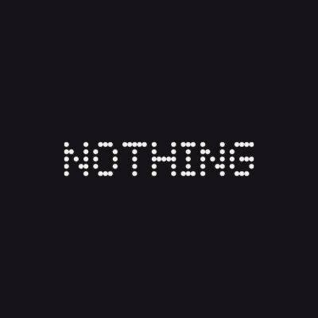 Nothing Community Dots Nothing Community Dots 是 Nothing 社区的会员 NFT。一个有可能的项目。我们所代表的一切，我们梦想的一切。来加入我们。放弃对我的赞美，向我们的潜力敞开大门。我们从连接
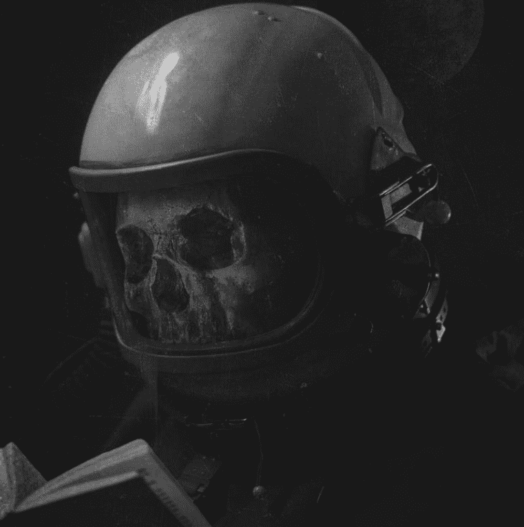 NOTHINGNESSNOTHING 过去 7 天内没有任何东西出售。 歼灭。八月。空白的。密码。虚无。 NOTHINGNESSNOTHING NFT - 常见问题（FAQ） ▶什么是NOTHINGNESSNOTHING？ NOTHINGNESSNOTHING 是一个 N
NotOkayBeanz NotOkayBeanz 统计 迪兹豆，它们不太好…… 过去 7 天没有售出 NotOkayBeanz。 得到你的豆子 NotOkayBeanz 是作为 NFT 铸造的不太好的 bean 的集合。 它们由各种豆子服装、豆子
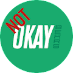 NotOkayBears ON Polygon NotOkayBears ON 多边形统计 所有 NFT 集合都符合元数据标准，并与所有流行的市场兼容。 使用您的 CandyMachineID（自动提供）申请在 SolSea 等热门市场上列出您
The Aquatica Collection 由花式水晶。 一系列独特的艺术品，由流动的丙烯酸和水墨画创作而成，然后经过手工细节和数字处理。 Aquatica 是对自然界中发现的生物形态和纹理的庆祝，特别是
The Atari Pluriform - by The Fabricant 经过 雅达利 The Fabricant 与 Atari 合作设计的 Pluriform 系列倡导性别多样性和数字时尚空间的包容性，我们可以在其中超越物理世界的限制。 凭借电子竞技和游戏的这种敏感性，我
The Auerbach Collection. The Process Series. Captured Moment：Master’s Process 将包含两个 NFT drop：一个用于 Process 照片，它揭示了 Master 作品制作过程中所涉及的微妙幕后构造，另一个用于
There is Nothing New Under The Sky 当人们摆脱自己陷入的恶性循环时，生活的单调就会结束。只有在那一刻，才能质疑天底下是否有新事物。生命不止于天空之下。于是，我们冲破城墙，回归自
World Of Women 一组独特、酷、多样的女性，准备在 NFT 空间留下印记！ 10,000 个随机生成的各种稀有数字收藏品作为 ERC-721 令牌生活在以太坊区块链上，并托管在 IPFS 上。WoW 的愿景是
ABCMETA-VOUCHER 使用您的 NFT 赚取奖励 NFT 市场，交易您的 NFT 并赚取利润。通过Bid-to-Earn赚取USDT。 Mint ABCMETA-ID - 您独特的像素化 NFT。竞标 ABCMETA-LA
Abducting Mfers Depolyer V2 绑架集体：v2 NFT 在过去 7 天内售出 89 次。 绑架集体：v2 的总销售额为 5.61 万美元。 一个被绑架的集体：v2 NFT 的平均价格为 63 美元。 有 1,208 个绑架集体：v2 所
Abe's 3777 ways to die 安倍的 3777 种死亡方式 NFT，住在以太坊，现在免费薄荷 总供应量 3777，每个钱包限制 5 个 NFT 铸造一个NFT你将获得10亿ABECoin ABECoin 总供应量 37770
Abnormal Abstract 具有 4k 图像的抽象 PFP 项目没有推特没有路线图只有 4k 抽象的 过去 7 天内没有出售异常摘要。 具有 4k 图像的抽象 PFP 项目 没有推特没有路线图只有 4k 摘要 什么是异常
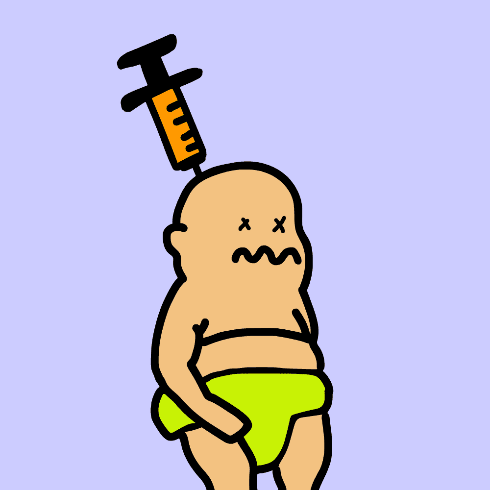 Aborted Babies 流产的婴儿👼 2022 年最落后的铸币厂。ERC 5050 合同实施，铸币后有 50% 的机会获得即时退款。 ❗ 每个钱包 1 个免费，然后每个婴儿 0.005 个。 仅提供 2000 个免费薄荷糖❗
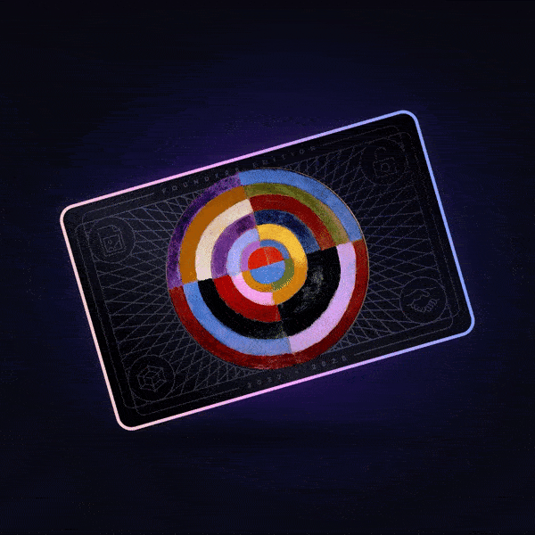 ABSTR4CTION | P4SS ABST4CTION PASS (444) 可让您获得社区创造的福利，完全依靠您的想象力。 团队负责人 Josiah Kincop 想要传达他的 ABSTR4CT 梦想，以便更多地了解他所看到的。 这个通行证让他和社区可以在一
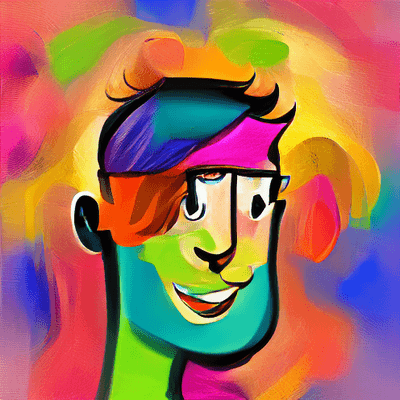 Abstract Pepls Abstract Pepls 是由 AI 生成的 8,350 张有趣和疯狂的 Pepls 肖像的集合。 你和我都是Pepls。 我们正在为这个熊市添加颜色。每个 Abstract Pepl 的灵感来自来自 https://abstract-pepls.devdad 的 Crypto Punks、Co
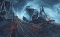 Abstraction Art V1 抽象是 500 个链上生成的艺术作品的集合，唯一的属性是 0 到 1 之间的浮点数，包含抽象的稀有性。 请注意，它们应该模仿被绘制到画布上。ERC-721a 合
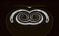 Abstractions 以抽象为特色的集合。 探索Explorechevron_right； bar_chartStatschevron_right; library_booksResourceschevron_right; mode_night 夜间模式； 连接钱包 我从 2020 年 12 月开始的第一个 AI 驱动的动漫肖像实验之一。
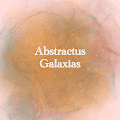 Abstractus Galaxias Abstractus Galaxias 是探索宇宙的 420 篇摘要的集合。 精心设计的 2000x2000 像素的 125 种不同画笔，精心策划的艺术品描绘了一颗新星的诞生。 什么是抽象星河？ Abstractus Galaxias 是一个 NFT（不可
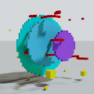 abstractwear 非具象体素服装 abstractwear NFT - 常见问题（FAQ） ▶ 什么是抽象服装？ abstractwear 是一个 NFT（不可替代令牌）集合。 存储在区块链上的数字艺术品集合。 ▶ 有多少抽象服装
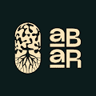 Absurd Arboretum 经过胶囊保险库 荒诞植物园是 3333 棵独特树的集合。每棵程序生成的树不仅是一种数字的、不可替代的代币，作为 ERC-721 代币存在于以太坊区块链上，并具体化为动画
Acephalous by The Weeknd x Strangeloop Studios Acephalous 是 Abel “The Weeknd” Tesfaye 和洛杉矶设计团队 Strangeloop Studios 的 5 件作品的集合。 The Weeknd 和 Strangeloop Studios 自 2015 年以来就在音乐会视觉和视听作品上进行合作，在每个专辑周期和
Acephalous Open Editions by The Weeknd x Strangeloop Studios Acephalous 是 Abel “The Weeknd” Tesfaye 和洛杉矶设计团队 Strangeloop Studios 的 5 件作品的集合。 The Weeknd 和 Strangeloop Studios 自 2015 年以来就在音乐会视觉和视听作品上进行合作，在每个专辑周期和
Achoo NFT - Viral Mint Achoo 是 10,000 个独特 NFT 的生成集合，有 62 个特别版 1/1，使用称为“病毒式铸造”的创新社区范围内的体验在以太坊区块链上铸造。 该系列由世界著名的陶瓷艺术家
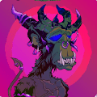 Acid Apes Candy Syndicate V2 Acid Apes Candy Syndicate 是一个基于 MAYC 的 NFT 衍生项目，专注于回馈社区。 我们不以任何方式隶属于 MAYC。 Acid Apes Candy Syndicate V2 - 系列 | OpenSea Acid Apes Candy Syndicate V2 Acid Apes Candy Syndicate 是一个基于 MAYC 的 NFT 衍生
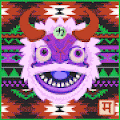 Acid Dragons Acid Dragons 是 Polygon 上的一个生成式 NFT 项目，由 4,000 多条最迷幻的随机龙组合中的 4000 条组成，融合了古代文化和神秘主义的元素。Metaseed Collective 的一部分：https
AcrocoDao 基本信息 加密 NFT 集合名称：AcrocoDao 收藏中的区块链加密货币：以太坊 收藏统计 NFT 总数：92 使用 AcrocoDao 的人数：35 收藏的资本化：0 ETH 底价 - 1 NFT 的
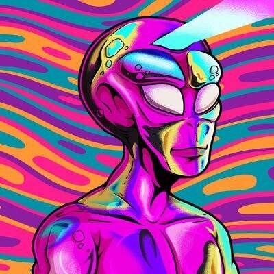 Ad Astra Club NFT https://Ad-Astra.club - MINT LIVE - 来自另一个星系的 5.000 名外星人来到地球，带来和平、爱与和谐。 快来了。 第一章 Ad Astra Club NFT - 收藏 | OpenSea Ad Astra Club NFT https://Ad-Astra.club - MINT LIVE - 来自另一个星系的 5.000 名外星
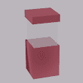 Add More Value 我想把我的作品的美提升到一个新的水平。 为 NFT 添加更多价值 - 常见问题 (FAQ) ▶ 什么是增加价值？ Add More Value 是一个 NFT（不可替代代币）集合。 存储在区块链上的
adidas Originals Bored Ape Bored Ape Yacht Club、PUNKS Comic 和 gmoney 欢迎 adidas Originals 加入元界。 第一阶段 NFT 实物产品索赔现已结束。 adidas Originals 进入 Metaverse - 系列 | OpenSea adidas Originals 进入 Metaverse 由 adidasOriginals Bored Ape Yacht Club、PUNK
Adidas x Bored Ape Yacht Club 运动鞋迷长期以来一直是科技潮流的引领者，从社交下降到 AR 试穿。文化声望的最新土地掠夺？元节。 经过数周的泄密事件，阿迪达斯准备推出一项广泛的元宇
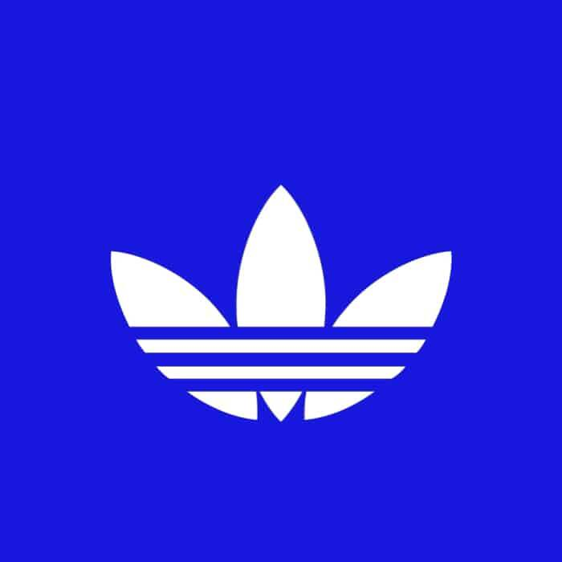 adidasphase3.com adidasphase3.com 是一个 NFT（Non-fungible token）集合，即存储在区块链上的数字艺术作品的集合。adidasphase3.com 集合现在包括
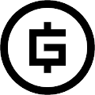 Admit One Admit One 是您进入 gmoney 生态系统的入口。旅程从这里开始。要了解更多信息，请阅读宣言。Admit One 将作为一个拥有 1,000 名成员的社区推出此铸币厂有两个允许列表
Admit Two 当你可以承认 2000 时，为什么要承认一个？ 提供 2000 张通行证，可以访问 Admit One Alpha Discord 频道和信息。请不要惊慌！ 我们正在提款以准备通行证资金！ 我们也将收集一些资
Adorable Aliens Club ▶ 什么是可爱的外星人俱乐部？ Adorable Aliens Club 是一个 NFT（非同质代币）集合。 存储在区块链上的数字艺术品集合。 ▶ 有多少可爱的外星人俱乐部代币？ 总共有 4,326 个
AdRunner NFTs AdRunner NFT 是由屡获殊荣的艺术家设计并在以太坊 (ERC-721) 区块链上保护的 4,444 个独特 NFT 的集合。作为 AdRunner NFT 持有者，您还可以成为我们社区的一员，参与一场激动人心的新广告
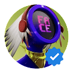 AdRunner OfficiaI 发布下一个也是最后一个 AdRunner NFT 集合的 4,444 个。只有 2,222 个 AdRunner Gen Z NFT 将被铸造，而剩余的 2,222 个将由第一代 AdRunner NFT 持有者培育。去中心化是我们的核心，所以我们希望我们